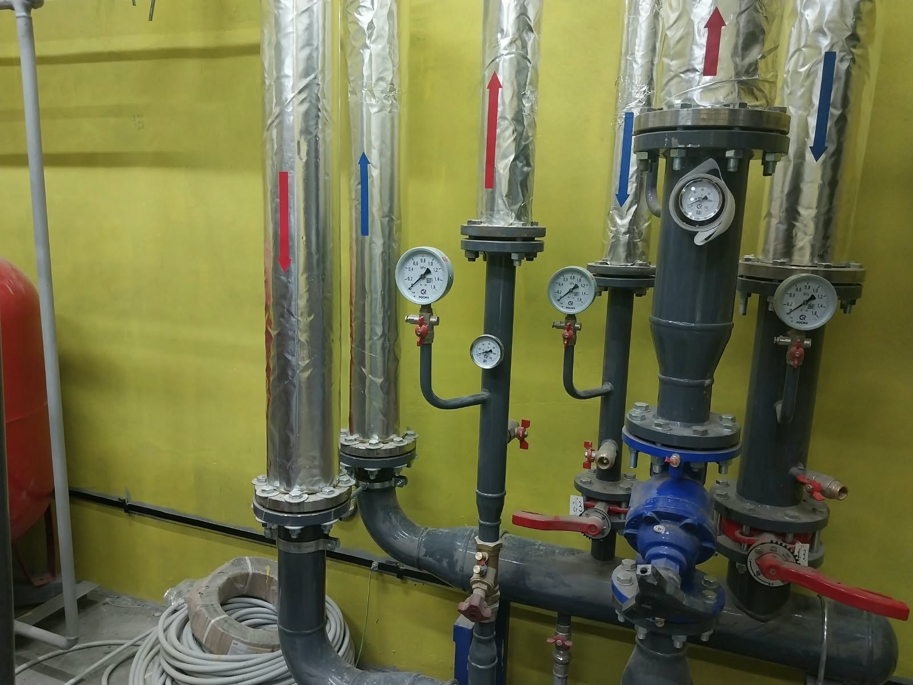

6 фото
6 фотоТеплоизоляция
Теплоизоляция наружных трубопроводов
Изоляция прямых участков, поворотов и вертикальных отводов.
Смотреть работуВыполняем теплоизоляцию трубопроводов и оборудования в технических помещениях и на открытом воздухе. Материал и конструкцию покрытия согласовываем под конкретную систему.
Обсудить работы
Сообщите, где проходит трубопровод, его диаметр, протяжённость и состояние существующей изоляции. Фотографии помогут понять доступ к прямым участкам, поворотам и оборудованию.
Объём, стоимость и сроки согласуем до начала работ.
Как строится работаРасскажите, какие работы нужны и где находится объект.